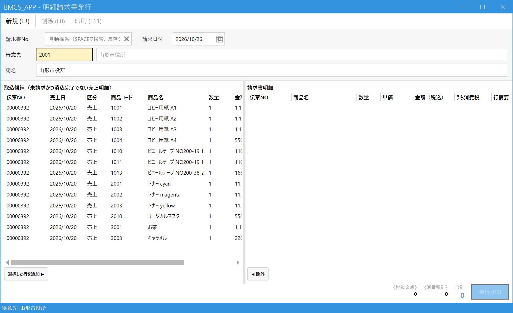

Issue an Itemized Invoice (Per-Transaction Billing)
Use this for per-transaction customers such as government offices and schools. You pick some of the sales you have delivered and issue an invoice for them right away. No month-end closing is needed.
You can change the addressee (for example a school class name or a teacher's name) for each invoice.
1.Choose the customer
From the main menu, open Itemized Invoice Issue (明細請求書発行) under Billing (請求). Enter the code in the Customer (得意先) field and press Enter (if you don't know the code, press Space to search). The customer's sales lines that have not been invoiced yet appear in the candidate list on the left (取込候補).

- Invoice No. (請求書No.): Leave this blank for a new invoice (a number is assigned automatically when you issue it). To view an invoice that was already issued, enter its number and press Enter, or press Space to search.
- Billing Date (請求日付): The date of the invoice (today's date is filled in).
- Customer (得意先): Code and name.
- Addressee (宛名): The name printed on the invoice. The customer name is filled in; to change it just this once, type over it here (example: "Chido-kan High School, Year 2 Class 3, Mr./Ms. ○○").
- Candidates (取込候補): Sales lines that have not been invoiced and have not been paid yet.
2.Select the lines to put on the invoice
In the candidate list on the left, select the lines you want on this invoice and press Add Selected Rows ▶ (選択した行を追加 ▶). The lines move to the invoice lines list (請求書明細) on the right. You can also double-click a line or press Enter to move it. If you make a mistake, select the line on the right and press ◀ Remove (◀ 除外).

- Select (click) the lines you want to include.
- Add Selected Rows ▶ (選択した行を追加 ▶).
- The lines that will appear on the invoice. Amounts are shown tax-inclusive, and the consumption tax included in them is also shown.
- To take a line off, select it on the right and press ◀ Remove (◀ 除外).
- Amount excluding tax, total consumption tax, and total (税抜金額・消費税計・合計): The totals of the invoice.
- Issue (発行) (F10): Confirms the invoice.
3.Issue and print
- Check the addressee, the lines and the total, then press Issue (発行) (F10).
- When the invoice is issued, an invoice No. is assigned and the screen returns to empty. The sales you included become "invoiced (請求済み)".
- To print the invoice, enter the invoice No. and press Enter to call it up, then press Print (印刷) (F11).
4.Cancel an issued invoice
Enter the invoice No. to call up the issued invoice, then press Delete (削除) (F8) (a confirmation message appears). The invoice becomes "canceled (取消)", and the sales that were on it go back to the not-invoiced state so they can be invoiced again. After canceling, you can create a new invoice from the same sales.
・A payment (even a partial one) has already been applied to the sales on the invoice
・An Itemized Receipt (明細入金) has been registered that specifies this invoice
Cancel the payment first, and then cancel the invoice.